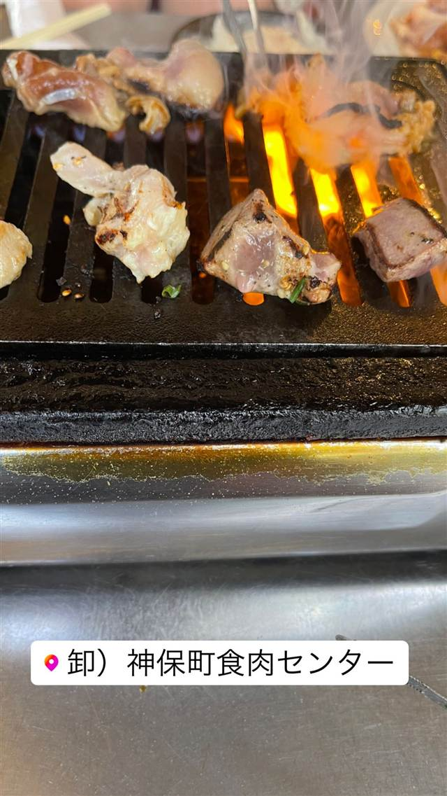

卸）神保町食肉センター 本店
群馬・高崎食肉センター直営、上州牛と上州豚とことん
卸）神保町食肉センター
群馬・高崎食肉センターを母体に2009年開業した卸直営の焼肉店。毎朝仕入れる新鮮な上州牛・上州豚とことんやホルモンを、生産から加工・流通まで一貫した体制でリーズナブルに提供する。
TRIVIA
豆知識
- 店名の「卸」は高崎食肉センターから直接仕入れる卸直営店であることに由来
- 都内では珍しい「上州牛」「上州豚とことん」を専門に扱う
REVIEWS
世間の評判
3.49食べログ
新鮮なレバーとホルモンの人気
- レバーやホルモンなど内臓肉の新鮮さと味の良さを評価する声が多い
- 45分の食べ放題でも料理が早く出てくるため満足度が高いという声がある
- 行列ができるほど混み合い店内はやや雑然としていると感じる人もいる
食べログ 口コミ814件
| 創業 | 2009年、株式会社とことんフーズと株式会社サンリョウが提携し開業 |
|---|---|
| 系譜 | 群馬・高崎食肉センターを母体に、生産・加工・流通・店舗運営を一貫体制で行うグループの直営店 |
| 看板 | 上州牛・上州豚とことんの焼肉、朝入荷のホルモン・レバー |
| こだわり | 群馬・高崎食肉センターから毎朝仕入れる新鮮な精肉・内臓肉を、産地から店舗まで一貫した流通体制でリーズナブルに提供 |
| どこから | 都心 |
| 行くなら | 行列 |
| 営業時間 | 月〜日 11:30-14:30、17:00-22:30 |
| 予算 | 夜 ¥3,000～¥3,999 |
| 場所 | 神保町駅 東京都千代田区神田神保町2-16 |
| メモ | 焼肉バイキングあり。上野店など系列店を展開 |
食べたもの：焼肉
NEARBY
近い店・同じ系統の店
-
 ★
二郎系(直系) 神保町
ラーメン二郎 神田神保町店
三田本店直系の乳化系濃厚豚骨醤油が自慢の二郎ラーメン
昼 ¥1,000～¥1,999
★
二郎系(直系) 神保町
ラーメン二郎 神田神保町店
三田本店直系の乳化系濃厚豚骨醤油が自慢の二郎ラーメン
昼 ¥1,000～¥1,999
-
 ★
つけ麺 神保町駅
つけそば 神田勝本
銀座の一つ星フレンチシェフが手がける清湯つけそば
昼 ～¥999
★
つけ麺 神保町駅
つけそば 神田勝本
銀座の一つ星フレンチシェフが手がける清湯つけそば
昼 ～¥999
-
 ★
焼肉 白金高輪駅
炭焼 金竜山
ロンドン帰りの店主夫妻が焼く上タン塩とシャトーブリアン
夜 ¥20,000～¥29,999
★
焼肉 白金高輪駅
炭焼 金竜山
ロンドン帰りの店主夫妻が焼く上タン塩とシャトーブリアン
夜 ¥20,000～¥29,999
-
 ★
焼肉 関内駅
関内苑 本店
韓国職人仕込みのキムチとA5和牛の手打ち冷麺
昼 ¥1,000～¥1,999
★
焼肉 関内駅
関内苑 本店
韓国職人仕込みのキムチとA5和牛の手打ち冷麺
昼 ¥1,000～¥1,999
-
 ★
焼肉 鶯谷駅
焼肉 鶯谷園
1968年創業、半世紀以上続く良心価格の厚切りタン
夜 ¥6,000～¥7,999
★
焼肉 鶯谷駅
焼肉 鶯谷園
1968年創業、半世紀以上続く良心価格の厚切りタン
夜 ¥6,000～¥7,999
-
 ★
焼肉 不動前
焼肉しみず
牛タンの中心部だけを使う厚切り黒毛和牛タン
夜 ¥10,000～¥14,999
★
焼肉 不動前
焼肉しみず
牛タンの中心部だけを使う厚切り黒毛和牛タン
夜 ¥10,000～¥14,999